什么是Git？
Git是一款分布式版本控制工具。
- 可以在本地进行版本控制。(即使服务器断网，SVN就不行)。
- 本地保存了全部的版本信息(包含历史记录)。
- 不怕单点故障。其实不存在单点这一说，因为是分布式。每台机器都保存了完整的项目信息(包含全部历史记录)。
Git工作区-add>暂存区-commit>本地库-push>远程库
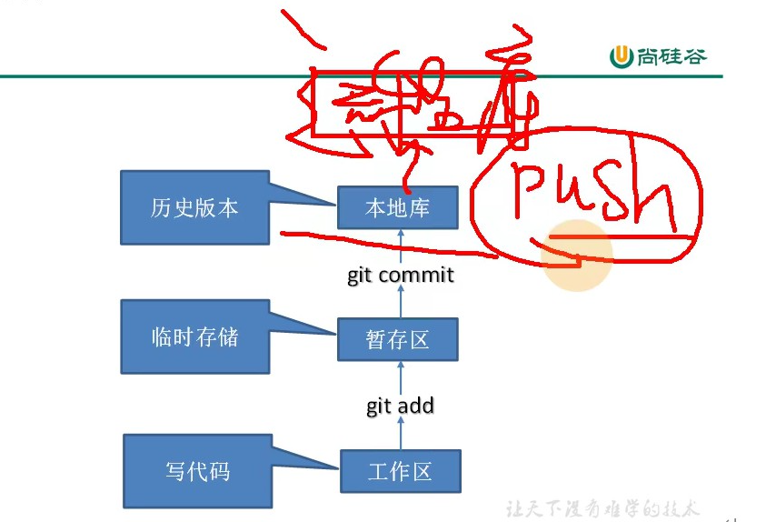
Git基本操作
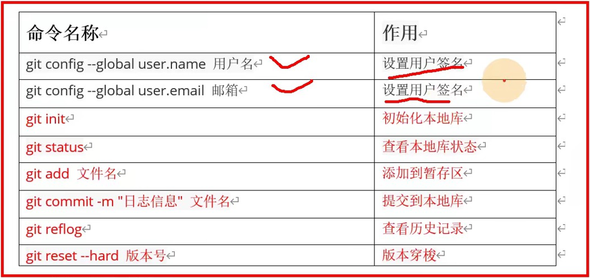
git config --global user.name 设置用户名
git config --global user.email 设置用户邮箱
这两个只是单纯的配一下name和email，和远程库的登录没有一丁点关系。
git init 初始化本地库
进入到你想管理的工程文件夹，右键git bash，使用 git init 命令即可把该文件夹设置为git本地库。
设置完毕后会在此文件夹下默认创建一个.git目录。
git status 查看本地库状态
会显示当前分支，及是否有文件需要add、commit等。
git diff 文件名
本地修改完文件后，用此命令比较修改前后的差异。
git add 文件名
将文件添加到暂存区
git add -A
将修改的全部工作区文件添加到暂存区
git rm --cached 文件名
删除存在于暂存区的文件，但是并不会删除存在于工作区的真实文件。
git commit -m "提交信息" 文件名
将文件提交到本地库，-m指的是message，用于写当次提交信息。
提交后会有一个7位简写版本号。
git commit -a
无需add，可以把工作区和暂存区的文件都提交。
git reflog 查看历史记录
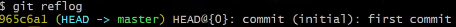
git log 查看当前分支详细历史记录
可以看到完整的版本号，和提交人的用户名，邮箱信息，提交时间。
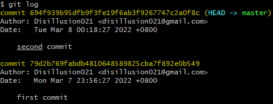
git log --oneline 查看一行式历史记录
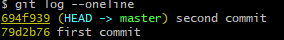
git log --graph ; git log --online --graph
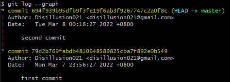
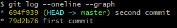
git reset --hard 版本号；git reset --hard HEAD~1
版本穿梭 (使当前分支指向某个指定的版本)(并且本地文件也穿梭回指定的版本)，HEAD~1表示向上穿梭一个版本。
- .git/HEAD 文件记录了当前处于哪个分支下
- .git/refs/heads/分支名 记录了该分支的版本号
- .git/refs/heads/master 记录了master分支的分支版本号
Git分支
Git切换分支底层是通过改变Head指针的引用来实现的
Git分支切换版本底层是通过改变master指针的引用来实现的
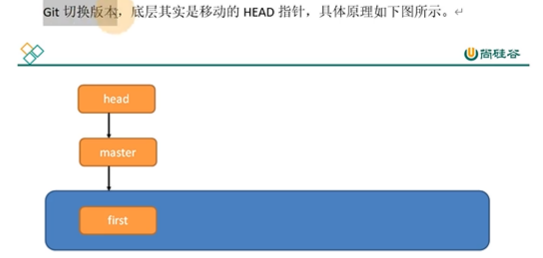
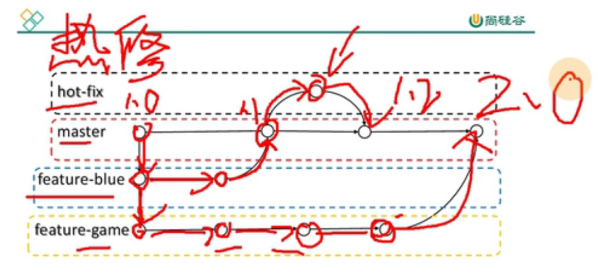
创建分支
git branch 分支名
删除分支
git branch -d 分支名
切换分支
- 切换分支
git checkout 分支名
git switch 分支名
- 创建分支并切换
git checkout -b 分支名
git switch -c 分支名
查看分支
git branch -v 查看分支
git branch -a 查看本地和远程所有分支
git branch -r 查看远程所有分支
合并分支
git merge 分支名 把指定分支合并到当前分支
合并冲突
- 冲突产生的原因：
合并分支时，同一个文件的同一个位置(范围包括相邻行)都做了修改,git无法替我们决定使用哪一个的时候。
- 解决冲突的方法：
此时必须人工解决合并冲突。
- 冲突后，git status 查看冲突文件。
- 手动修改冲突文件后，git add 添加暂存区。
- 再用 git commit -m "xxxx" 提交冲突文件。注意commit时不能加冲突文件名，因为git无法分辨是哪个版本的
<<<<<<< 开始
为当前分支代码冲突部分的代码
======= 结束
======= 开始
为要合并的分支代码冲突部分的代码
>>>>>>> 结束
<<<<<<< 开始
为当前分支代码冲突部分的代码
======= 结束
======= 开始
为要合并的分支代码冲突部分的代码
>>>>>>> 结束
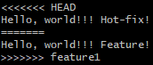
团队内协作
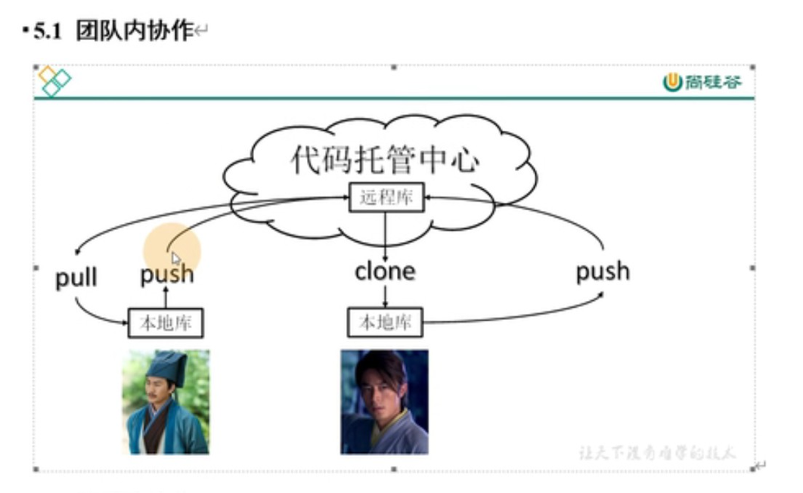
跨团队协作
SSH协议连接GitHub
- 在C盘当前用户下右键Git Bash，输入命令
修改下邮箱为 disillusion021@gmail.com, 按三次回车，即创建完毕。
用户目录下会生成.ssh文件夹。
- 在.ssh文件夹下找到 id_rsa.pub 文件，复制其内容(存放的公钥)。
- 在GitHub账号中的settings下找到SSH keys设置，新建SSH key，随便起个title，粘贴刚刚复制的公钥。添加成功。
关联远程库
- git remote add 仓库别名 远程库地址
给一个远程库起别名(别名最好跟仓库名一致)
e.g.1 git remote add origin 远程库地址
e.g.2 git remote add GitDemo 远程库地址
- git remote -v 查看当前所有远程库别名
推送到远程库
git push 仓库别名 分支名
将本地库分支推送给远程库的同名分支，若没有则创建
e.g. git push GitDemo main
git push -u 远程库地址/别名 本地分支名 :远程库分支名
:远程库分支名可以省略，省略后默认寻找与本地分支名同名的分支推送
-u 表示将本地分支与远程库分支建立联系，下次可以简化命令 使用git push origin 或 git push
如果省略本地分支名 则表示删除指定的远程分支
push后不光会把本地分支推送给远程仓库，还会把远程仓库的远程分支(如master)和本地仓库的远程分支(o/master)都更新到push的分支的最新版本
从远程库拉取
git pull = git fetch + git merge
- git fetch 分支名
从远程库获取数据，并将本地仓库中对应的远程分支(如o/dev)更新成了远程仓库相应分支最新的状态(dev)。
- git pull 远程库地址/别名 远程库分支名:本地分支名
表示拉取远程分支与本地分支合并
若省略:本地分支名，则表示与当前分支合并
git pull --rebase = git fetch + git rebase
git pull --rebase 远程库地址/别名 远程库分支名:本地分支名 表示拉取远程分支并令本地分支变基到拉下来的本地中的远程分支。
建立分支追踪关系
git branch --set-upstream-to=origin/next master
上面命令指定master分支追踪origin/next分支，简化push和pull
同理若当前分支存在追踪关系，可以用 git pull origin 或 git pull 简化命令
克隆远程库代码
git clone 远程库地址
GitHub 怎么搜索？
- Awesome + 关键字
- Gitee-GVP项目
Github怎么玩一个项目？
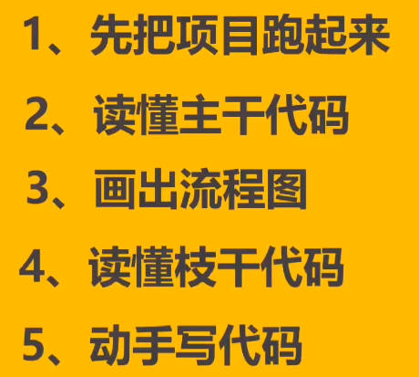